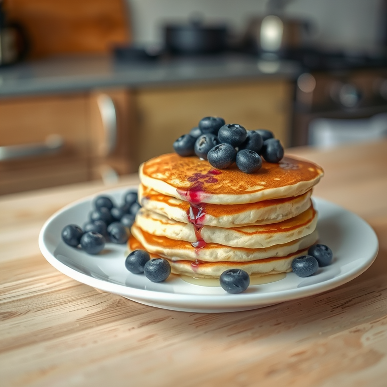

Banana Blueberry Pancakes

Description
Sweet and soft stack of pancakes, feel free to substitute fruit for your personal favorites.
Ingredients
1 rip banana, peeled and diced
1/2 cup ripe blueberries
1 cup all-purpose flour
2 tablespoons brown sugar
2 teaspoons baking powder
1/8 teaspoon salt
1/2 teaspoon cinnamon
1 cup milk ( okay to substitute with almond or oat milk )
1 large egg
2 tablespoons butter or oil to coat frying pan
Steps
In a small bowl, mix flour, sugar, baking powder, salt, and cinnamon. In a slightly larger bowl, mix egg and milk.
Heat oil or butter in a small frying pan or griddle on medium heat.
Mix dry ingredients into egg and milk mixture, and beat with a fork until mostly smooth.
Add fruit into mixture and stir gently. Alternatively, you may add directly to each pancake as it cooks.
Using a large spoon or measuring cup, pour the mixture into the heated pan until it forms the size pancake you desire.
Flip pancake when holes form on the top side.
Allow a minute or two, remove the pancake, checking to make sure it has browned a bit on the bottom side.
Repeat until all your mix is used.
Return to Home